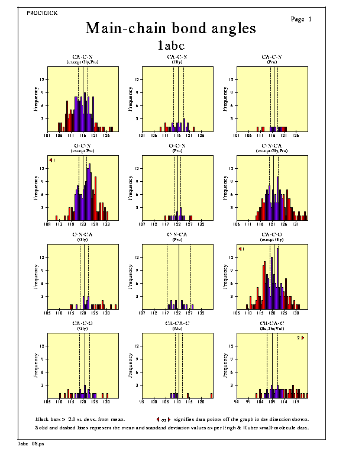

The histograms on this plot show the distributions of each of the different main-chain bond angles in the structure. The solid line in the centre of each plot corresponds to the small-molecule mean value, while the dashed lines either side show the small-molecule standard deviation, the data coming from Engh & Huber (1991).
Highlighted bars correspond to values more than 2.0 standard deviations from the mean.
If any of the histogram bars lie off the graph, to the left or to the right, a large arrow indicates the number of these outliers (as in the CA-C-O and CB-CA-C plots above).
Significant outliers are shown on the Distorted geometry plots.
Reference
| Engh RA and Huber R (1991). Accurate bond and angle parameters for X-ray protein structure refinement. Acta Cryst., A47, 392-400. |